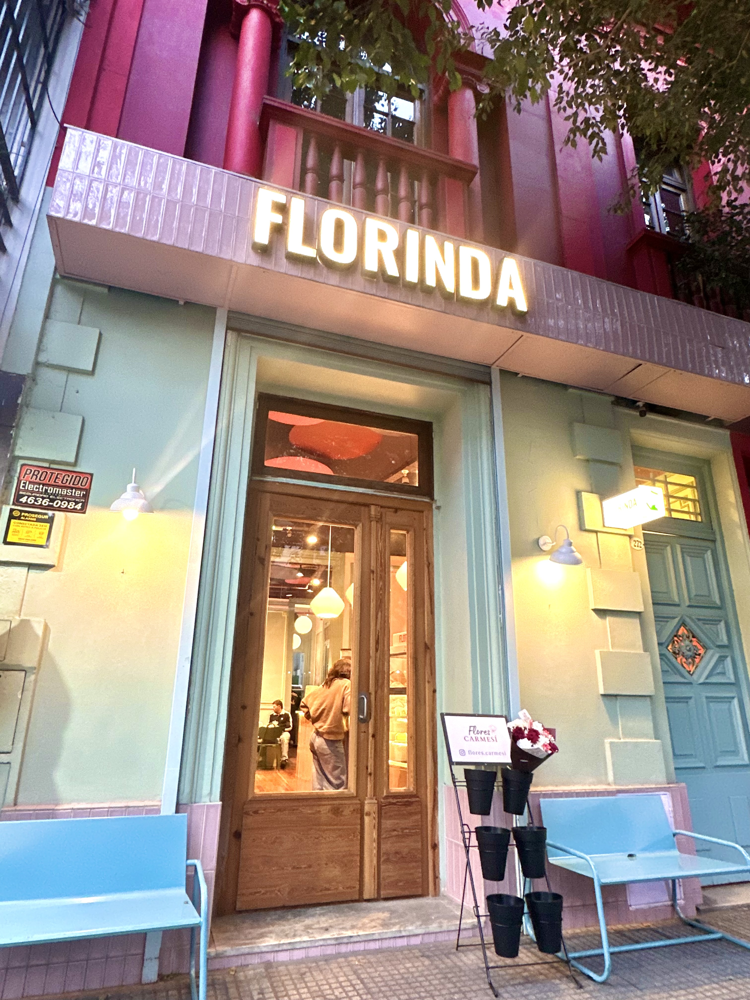

Florinda nace como un espacio pensado para disfrutar los pequeños momentos del día. Inspirado en la calidez de los cafés modernos y minimalistas, buscamos crear una experiencia tranquila, estética y acogedora.
Creemos que un café puede ser mucho más que una bebida: puede convertirse en una pausa, una charla, un momento de inspiración o simplemente un lugar para sentirse cómodo.
Cada detalle del espacio fue diseñado para transmitir calma y cercanía, combinando colores suaves, materiales cálidos y una propuesta simple pero cuidada.
Apostamos por un ambiente relajado y una estética cálida donde cada persona pueda disfrutar de una experiencia cómoda y auténtica.
Trabajamos con café de especialidad, pastelería artesanal y productos frescos preparados diariamente con ingredientes de calidad.
Diseñamos un entorno minimalista y luminoso pensado para compartir, trabajar, estudiar o simplemente disfrutar un momento tranquilo.